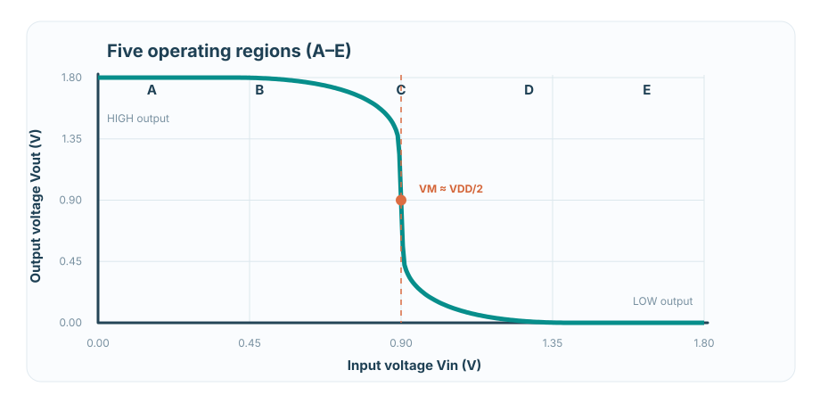
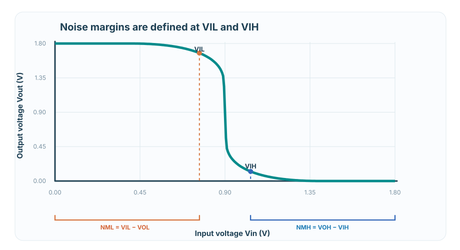
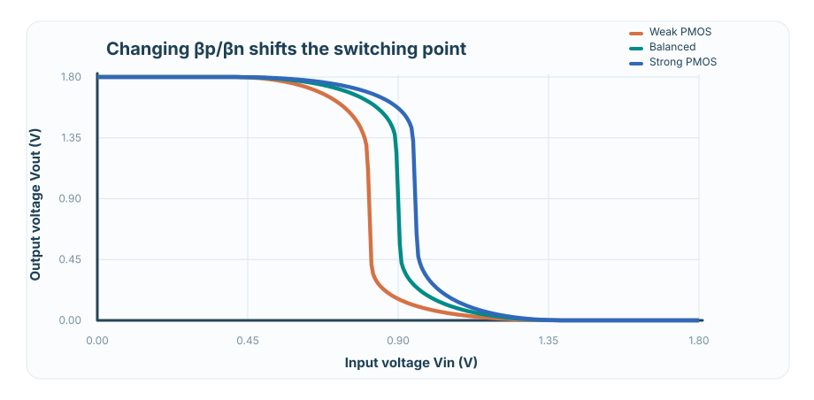

The CMOS Inverter
A CMOS inverter is the simplest complementary logic gate. It converts a LOW input to HIGH output and a HIGH input to LOW output, but understanding why it works requires looking at MOSFET conduction, output current, voltage-transfer characteristics, and transistor sizing.
What you will learn
- Identify the complementary pull-up and pull-down paths and predict logic levels.
- Determine MOSFET cutoff, linear (triode), and saturation operation.
- Read a CMOS inverter voltage-transfer characteristic (VTC) and noise margins.
- Compute the β ratio and size PMOS/NMOS to center the switching threshold.
- Explain why strength imbalance moves the VTC and test the effect interactively.
Contents of this chapter
1.1 How a CMOS inverter works
The circuit uses two complementary transistors: a p-channel MOSFET (PMOS) at the top and an n-channel MOSFET (NMOS) at the bottom. Their gates connect to the same input voltage, Vin, and their drains meet at Vout. The PMOS sources current from VDD when enabled; the NMOS sinks current to ground when enabled. [1]–[3]
Reading the transistor schematic: The PMOS gate is marked by a small inversion bubble, while the NMOS gate has no bubble. The gate electrode is separated from the channel (there is no direct gate-to-drain connection). PMOS source is at VDD, NMOS source is at ground, and the two drain terminals form Vout. The body terminals are omitted from this three-terminal drawing; PMOS bulk is tied to VDD, and NMOS bulk to GND.

Concepts discussed in Neamen §16.3.2, Baker §11.1, and Weste & Harris §2.5.1. Original instructional drawing by the VLSI Design project; not a reproduction of a textbook figure.

Based on the switching explanation in Baker Ch. 11 and Neamen §16.3. Original instructional drawing by the VLSI Design project; not a reproduction of a textbook figure.
| Input | PMOS pull-up | NMOS pull-down | Stable output |
|---|---|---|---|
| 0 V (LOW) | ON | OFF | VDD (HIGH) |
| VDD (HIGH) | OFF | ON | 0 V (LOW) |
For either ideal steady logic state, the conducting device connects the output to one rail while the other blocks a DC path between rails. Hence ideal static CMOS power is zero in these steady states. Real MOSFETs leak, and both devices conduct briefly during a slow input transition; zero static current is an approximation, not an absolute physical fact.
1.2 MOSFET current models: the three regions
VTC calculation begins with the MOSFET square-law model. For NMOS, define VOV,n = VGS,n − VTN and βn = μnCoxWn/Ln. An NMOS is cut off if VGS ≤ VTN; it is in the linear (triode) region if 0 < VDS < VOV,n; it is in saturation if VDS ≥ VOV,n. For PMOS the corresponding positive magnitudes are VSG, VSD and |VTP|.
NMOS long-channel drain current (λ ≈ 0)
PMOS current follows the same equations using |IDp|, VSG, VSD, and |VTP|. These equations are useful for teaching and hand calculation; modern processes require compact models (such as BSIM) to account for short-channel effects. See Baker §§6.3, 9.1 and Weste & Harris §2.2.
For a DC inverter with no external load, the steady output is determined by the current equality IDn = |IDp|. In the simulator, finite output resistance is approximated with a small channel-length modulation parameter to obtain a continuous VTC.
1.3 Five operating regions along the VTC
As Vin moves from 0 to VDD, the pair passes through five useful operating regions. This progression explains both the near-rail behavior and the steep center transition. Weste & Harris Table 2.3 provides a particularly useful five-region organization.

Teaching redrawing of the A–E region framework in Weste & Harris §2.5.1 and the current-balance explanation in Neamen §16.3.2. Original instructional drawing by the VLSI Design project; not a reproduction of a textbook figure.
| Region | Vin progression | NMOS | PMOS | What happens to Vout? |
|---|---|---|---|---|
| A | Low, below VTN | Cutoff | Linear | Held near VDD |
| B | Begins to rise above VTN | Saturation | Linear | Starts to fall |
| C | Around switching point | Saturation | Saturation | Falls sharply |
| D | Approaches VDD − |VTP| | Linear | Saturation | Approaches ground |
| E | High | Linear | Cutoff | Near 0 V |
These regions are qualitative. The widths and boundaries of the center transition depend on device parameters; a matched ideal square-law inverter has a very sharp transition, while real short-channel transistors have finite gain and a less abrupt VTC.
1.4 Voltage-transfer characteristic and noise margins
The voltage-transfer characteristic (VTC) is the steady-state relationship Vout(Vin). It is not a time-domain waveform. VOH is the minimum valid HIGH output; VOL is the maximum valid LOW output. For an ideal unloaded inverter VOH ≈ VDD, VOL ≈ 0.
The switching threshold VM is defined where the VTC crosses Vout = Vin. It is not the same as the low/high input thresholds VIL and VIH. For a differentiable VTC, those thresholds conventionally occur where the slope equals −1.
Noise-margin definitions
The ambiguous input region is VIL < Vin < VIH. Higher margins mean greater tolerance to input noise.

Consistent with Baker Fig. 11.2 and Weste & Harris §§2.5.1–2.5.3. Curves and annotations generated for this book. Original instructional drawing by the VLSI Design project; not a reproduction of a textbook figure.
1.5 Transistor sizing and the β ratio
Changing transistor width changes its current-drive parameter. At a fixed channel length, a wider device typically conducts more strongly under the same gate bias (within the scope of the square-law approximation). The pMOS charge carriers have lower mobility, so the PMOS often needs a wider W/L to match the NMOS. The exact width ratio is technology-dependent, not always 2.
Relative pull-up and pull-down strengths
If VTN = |VTP| and the devices follow the saturation square law, the balanced choice βp = βn yields VM = VDD/2. This is one way to balance noise margins. It does not by itself guarantee equal rise/fall delays under all loads.
1.6 Worked example — choose PMOS width
Let VDD = 1.8 V; VTN = +0.4 V; VTP = −0.4 V; μnCox = 200 μA/V²; μpCox = 100 μA/V²; Ln = Lp = 0.18 μm; and Wn = 0.9 μm. Find Wp to obtain VM = VDD/2.
Step 1: Since threshold magnitudes are equal, use βp/βn = 1 for the balanced design. Substitute all the parameters directly:
Step 2: Cancel the common length and isolate the PMOS width:
Interpretation: In this example μnCox is twice μpCox. A PMOS twice as wide therefore has approximately the same β. The 1.8-V supply sets the design target VM = 0.900 V; it cancels from this width calculation only because threshold magnitudes are matched.
1.7 When sizing is mismatched: VTC shifts
Define r = βp/βn. A weak PMOS (r < 1) shifts the VTC left, making the switching voltage lower. A strong PMOS (r > 1) shifts it right. In Weste & Harris §2.5.2 these are discussed as LO-skew and HI-skew inverters.
Switching threshold derived from saturation current balance

The behavior follows Weste & Harris §2.5.2, especially its discussion of beta-ratio effects (the source book uses Fig. 2.28). Original instructional drawing by the VLSI Design project; not a reproduction of a textbook figure.
| Wp | r | VM (analytical) | Explanation |
|---|---|---|---|
| 0.9 μm | 0.50 | 0.814 V | Weak PMOS → left shift |
| 1.8 μm | 1.00 | 0.900 V | Balanced |
| 2.7 μm | 1.50 | 0.950 V | Strong PMOS → right shift |
These switching thresholds are hand-calculation approximations. The interactive simulator includes a small channel-length modulation parameter to produce continuous DC curves; the displayed threshold may differ slightly.
1.8 Interactive laboratory — test your predictions here
Change Wp and Wn to measure switching threshold, noise margins and intrinsic output delay, then answer five interactive questions. Also see βp/βn, VM, the VTC, and two separate time-domain voltage plots. There are no frequency or external load capacitance controls. If your screen is narrow, use the full-page link.
Lab worksheet
- Select Balanced and record the ratio and VM.
- Select Weak PMOS. Predict the VTC shift, then read the graph.
- Select Strong PMOS. Compare the switching point with the balanced case.
- Compare the upper Vin waveform and lower Vout waveform. What happens when Vin crosses VM?
- Try reducing VDD while keeping VTN and |VTP| constant. How does the voltage swing change?
1.9 What the DC experiment does not model
An open-circuit output means no externally connected load. It does not imply zero intrinsic diffusion, gate-overlap, or wiring capacitance. The two time-domain plots in the experiment are generated by mapping a fixed input pattern through a quasi-static DC VTC. They are instructional quasi-static voltage traces, not a delay-accurate transient SPICE simulation. The lab separately estimates step-response delays using a clearly stated illustrative intrinsic-capacitance assumption; this must not be confused with PDK-calibrated timing.
With real capacitance, a first-order delay estimate is tpd ≈ 0.69ReqCload. Changing W/L changes both resistance and intrinsic capacitances; the best sizing depends on fanout, load, area, and energy requirements. For engineering sign-off, simulate an actual PDK model at operating corners. Baker §§11.2–11.4 and Weste & Harris Chapters 4–5 examine delay and power in depth.
1.10 Practice problems — reveal the answer
Q1. With Vin = 0, which transistor is ON and why is Vout HIGH?
The PMOS gate is low relative to its source at VDD, so PMOS is ON; NMOS is OFF. The PMOS connects the output to VDD.
Q2. Why is the inverter not dissipating zero power during every transition?
For part of the input transition, both transistors conduct, creating a short-circuit path; charging and discharging parasitic capacitances also consumes energy.
Q3. What distinguishes VM from VIL and VIH?
VM is where Vout = Vin. VIL and VIH are the two unity-magnitude-slope points on the VTC (dVout/dVin = −1) used in defining noise margins.
Q4. With μpCox = 80 μA/V², what width restores βp = βn?
Wp = [200/80] × 0.9 = 2.25 μm when both channel lengths are equal.
Q5. What happens to VM if Wp = 0.9 μm?
r = 0.5, so VM ≈ 0.814 V from the long-channel equation. The VTC shifts left.
Q6. Does “open circuit” imply that a physical output changes instantaneously?
No. Open circuit excludes an external load but not intrinsic device and wiring parasitics, so physical transients still have finite delay.
Textbook references and figure attribution
[1] D. A. Neamen, Microelectronics: Circuit Analysis and Design, 4th ed. McGraw-Hill, 2010, §16.3 (especially §16.3.2, Figs. 16.21 and 16.26).
[2] R. J. Baker, CMOS: Circuit Design, Layout, and Simulation, 3rd ed. Wiley–IEEE Press, 2010, Ch. 11 (§11.1 DC characteristics, §11.2 switching, §11.3 layout; see Figs. 11.1–11.2).
[3] N. H. E. Weste and D. M. Harris, CMOS VLSI Design: A Circuits and Systems Perspective, 4th ed. Addison-Wesley, 2011, §2.5 (Figs. 2.25–2.30, Table 2.3), Chs. 4–5 for delay and power.
All figures in this online chapter are newly drawn, original teaching illustrations. The uploaded textbooks were used as references; their copyrighted figure images or pages are not redistributed on this public website.